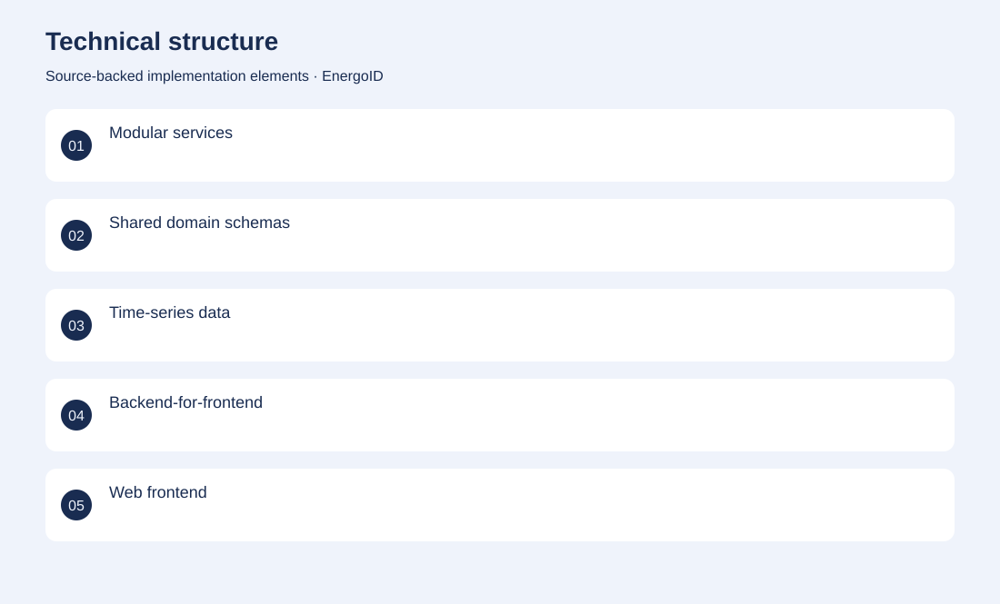
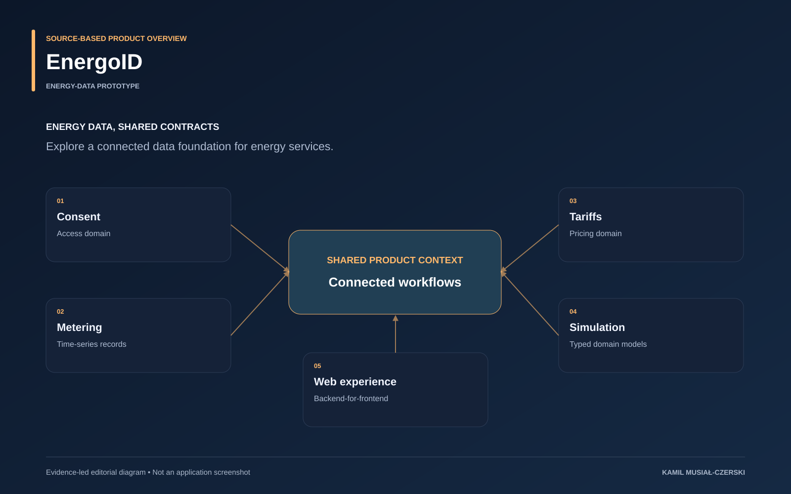

The project
Engineering work on an energy-platform prototype spanning consent, metering, tariff and simulation domains, shared service contracts and a web experience. A typed monorepo combines domain services, shared validation, observability and a frontend application. The prototype focuses on energy-domain models, service boundaries and web workflows.
The problem
Energy workflows require consistent domain models and controlled access across fragmented data sources.
The solution
A typed monorepo combines domain services, shared validation, observability and a frontend application.
My contribution
Contributed domain modelling, shared validation and service structure for the energy-data prototype.
Technical structure

Product overview

The portfolio cover is an editorial illustration. No live product screenshot is presented for this project.
Showcase assets
{kind=link}
{kind=link}
{kind=link}
New portfolio identity. Newly designed marks are portfolio treatments, not claims of official client branding.